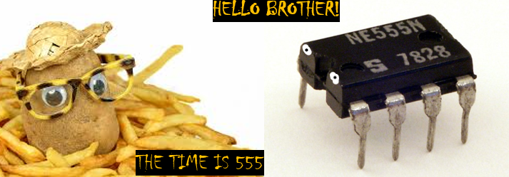
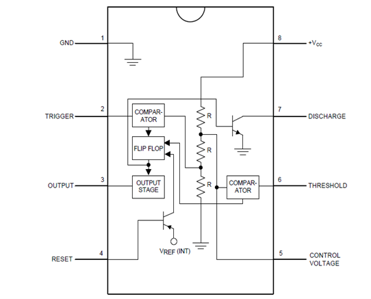

Michael Machohi
Mechatronic and Software engineer
The chip that couldn't be fried, the dead arachnid
The 555 timer is a marvel of engineering, a chip that was designed in 1971 by Hans Camezind. As tiny as it may look, this particular chip has 25 transistors, 2 diodes and 15 resistors in an 8-pin setup. Its name is derived from its unique arrangement of 3, 5K resistors placed in series. But what can this thing do?
The 555 timer works how you want it to work. It can delay, generate pulse width signals and can also be used as an oscillator. Let’s dive in to the working mechanism of this IC. The 555 timers can work in three main modes namely astable where is acts as an oscillator, monostable where it acts as a “one shot” timer and bistable where it acts a s a flip-flop.
Focusing on the astable mode, this IC can generate continuous square wave output and hence be an oscillator. Of course, when you hear wave and an IC, you wonder, how will I control the frequency or other factors that are wave-dependent. You can’t have an IC without a circuit, can you? External resistors and capacitors used in the circuit can be used to adjust frequency by shifting their values. The common frequency used widely is 40-60 hertz. However, you can generate your own using the formula:
Frequency= 1.44/ ((R1+ 2R2) *C1)
Frequency of output waveform is determined by values of two resistors and a capacitor.
From the formula, we see that it is mandatory to have a capacitor in your IC circuit, here is why
The image shown is an undetailed skeleton of this IC. Sometimes, you may need to force the 555 timer to its initial state and reset the oscillator the same way you would opt to restart your phone or laptop.
In astable mode, the 555 timers ‘don’t’ have a reset pin like in the monostable mode. Instead, the flip-flop can be reset by constantly practicing charging and discharging. This is a capacitor’s specialty. The flip-flop is the key component in generation of the square waves.
Astable mode can be used in the control of servos where pulse width signals need to be sent via a 555 timer. Forward and backward movement of the servos will be controlled using push buttons.
However, behind the scenes of the circuit, the 555 timer controls all this with the help of resistors and a capacitor by setting and ‘resetting’. If a 555 timer generates a wave of 60 hertz via its output pin, the servo receives a PWM signal of a specific period. A period of 1ms tells the servo “Stay at 0 degrees”. A period of 2ms tells it to move 180 degrees. You can therefore guess what a period of 1.5ms tells it to do
For curious engineers, you may want to meet duty cycle. This guy is the percentage of time that the PWM signal will be high(on) compared to the total period of the waveform. If you want to control the amount of time your servos will rotate, you talk to this guy.
You can calculate duty cycle using the formula:
Duty cycle = (R1+R2)/(R1+2R2)
Frequency and duty cycle relate in that:
1.44/(C1*frequency) = (R1+R2)/ duty cycle
This is one among many of the applications of astable mode and keep in mind there are other several modes. I hope you have learnt something new today.